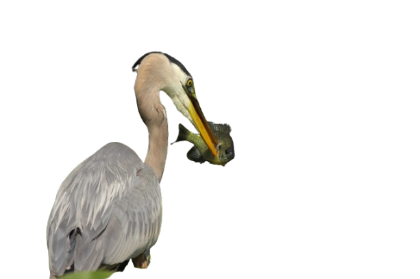

Abstract
Implicit Neural Representations (INRs) have become an essential tool for modeling continuous 2D images,
enabling high-fidelity reconstruction, super-resolution, and compression. Popular architectures such as SIREN, WIRE,
and FINER demonstrate the potential of INR for capturing fine-grained image details. However, traditional INRs often
lack explicit geometric structure and have limited capabilities for local editing or integration with physical simulation,
restricting their applicability in dynamic or interactive settings. To address these limitations, we propose GaINeR:
Geometry-Aware Implicit Network Representation, a novel framework for 2D images that combines trainable Gaussian
distributions with a neural network-based INR. For a given image coordinate, the model retrieves the K nearest
Gaussians, aggregates distance-weighted embeddings, and predicts the RGB value via a neural network. This design
enables continuous image representation, interpretable geometric structure, and flexible local editing, providing a
foundation for physically aware and interactive image manipulation.
Video
Results


BibTeX
@article{jakubowska2025gainer,
title={GaINeR: Geometry-Aware Implicit Network Representation},
author={Jakubowska, Weronika and Zieliński, Mikołaj and Tobiasz, Rafał
and Byrski, Krzysztof and Zięba, Maciej and Belter, Dominik
and Spurek, Przemysław},
journal={ArXiv},
year={2025}
}